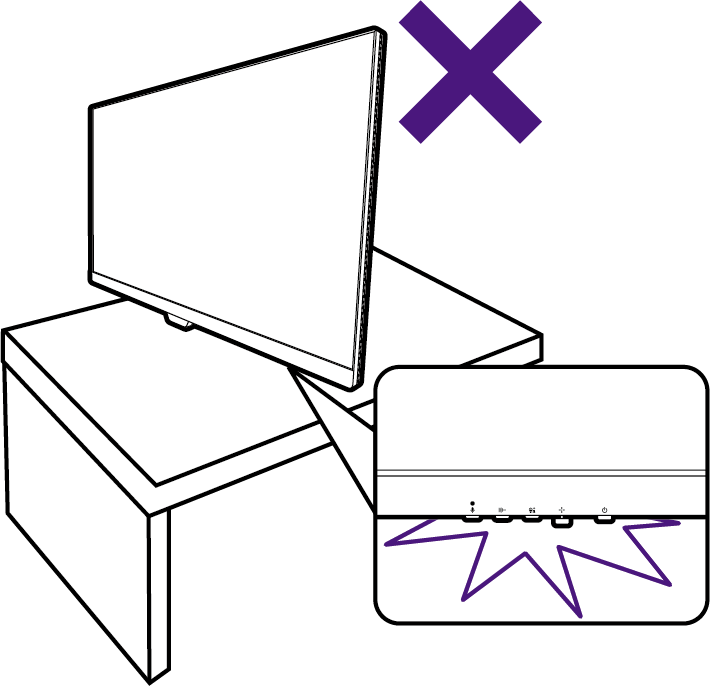
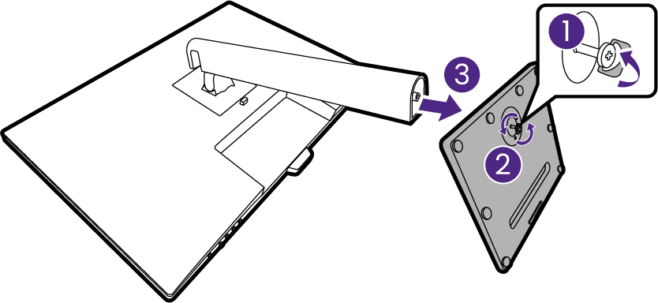
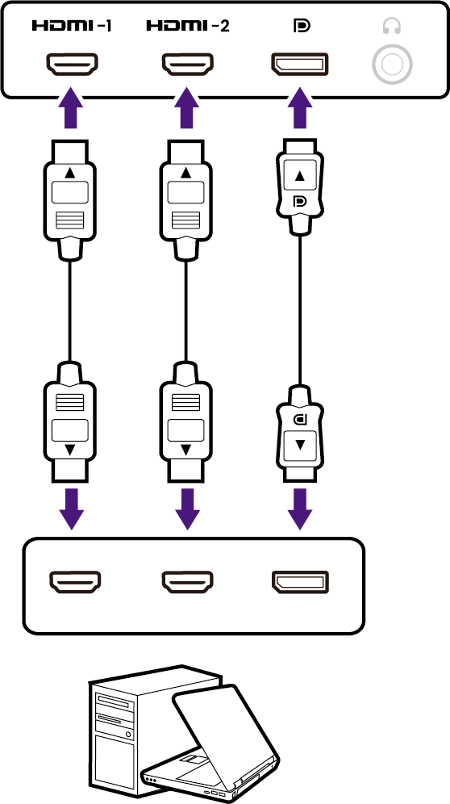
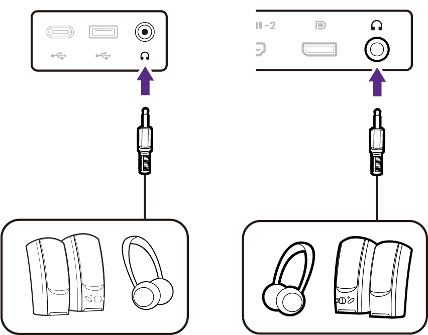
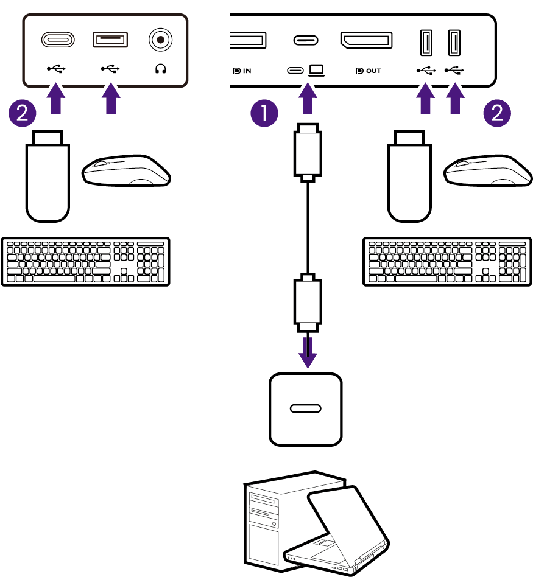
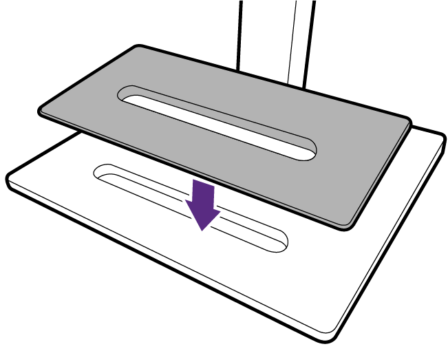
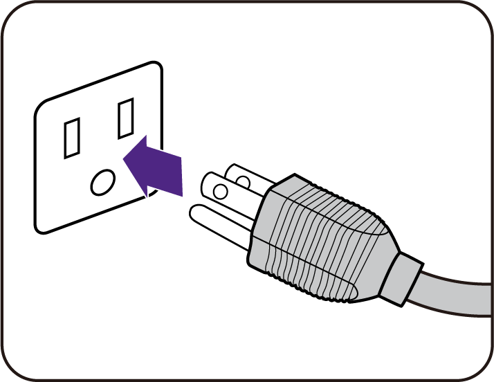
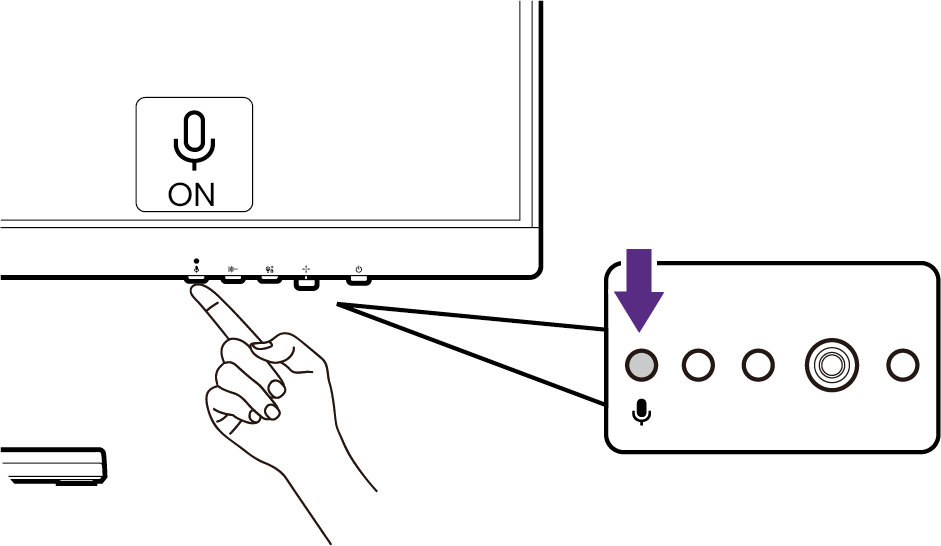

How to assemble your monitor hardware (for models with height adjustment stand)
- If the computer is turned on you must turn it off before continuing.
- Do not plug-in or turn-on the power to the monitor until instructed to do so.
- The illustrations in this document are for your reference only and may look different from the appearance of the product. Check Back view and The control panel for the available ports and controls of the purchased model.
- Avoid finger pressure on the screen surface.
- The latch on the monitor stand/base of the same model may vary by design, yet the installation, function, and product appearance are not affected in general. Be sure to assemble the monitor with the stand/base in the same package.
Never stand your monitor on a desk or floor without its stand arm and base. The controls on the bottom of the front bezel are not designed to hold the weight of the monitor and may be damaged.

1. Attach the monitor stand and base.

Please be careful to prevent damage to the monitor. Placing the screen surface on an object like a stapler or a mouse will crack the glass or damage the LCD substrate voiding your warranty. Sliding or scraping the monitor around on your desk will scratch or damage the monitor surround and controls.
Protect the monitor and screen by clearing a flat open area on your desk and placing a soft item like the monitor packaging bag on the desk for padding.
Gently lay the screen face down on a flat clean padded surface.

Attach the monitor stand to the monitor base as illustrated.
Orient and align the stand arm with the monitor (1), push them together until they click and lock into place (2).
Tighten the thumbscrew on the bottom of the monitor base as illustrated.
Gently attempt to pull them back apart to check that they have properly engaged.

Carefully lift the monitor, turn it over and place it upright on its stand on a flat even surface.
You might want to adjust the monitor stand height. See Adjusting the monitor height on page 27 for more information.

Your monitor is an edge-to-edge monitor and should be handled with care. Avoid finger pressure on the screen surface. Adjust the screen angle by placing your hands on the top and on the bottom of the monitor as illustrated.
You should position the monitor and angle the screen to minimize unwanted reflections from other light sources.


2. Connect the PC video cable
The video cables included in your package and the socket illustrations on the right may vary depending on the product supplied for your region.

- Connect the plug of the HDMI cable to the HDMI port on the monitor. Connect the other end of the cable to the HDMI port of a digital output device.
- Connect the plug of the DP cable to the monitor video socket. Connect the other end of the cable to the computer video socket.
- Connect the plug of the supplied USB-C™ cable to the USB-C™ port on the rear of the monitor. Connect the other end of the cable to the USB-C™ port of a laptop. It allows signal, audio, and data transmission from the laptop to the monitor.
Tighten all finger screws to prevent the plugs from accidently falling out during use.
3. Connect the headphone.
You may connect headphones to the headphone jack on your monitor. The location of the headphone jack varies by model.
(On the lower part of front bezel)
(On the rear of the monitor)

4. Connect the USB devices.
Available for models with USB-C™ and USB-A ports. Check Back view for the available ports of the purchased model.
- Connect the USB-C™ cable between the PC and the monitor (via the USB-C™ port). This upstream USB port transmits data between the PC and the USB devices connected to the monitor.
- Connect USB devices via other USB ports (downstream) on the lower part of the front bezel. These downstream USB ports transmit data between the connected USB devices and the upstream port.
(On the lower part of front bezel)
(On the rear of the monitor)

5. Attach monitor base cover to the base.(optional step)
Use the base cover (optional accessory) to hold devices to keep your working space neat with style.
Visit www.BenQ.com for the availability of base cover GC01.
The device on the base cover is for illustration only and is not provided with the product.

6. Connect the power cable to the monitor.
Plug one end of the power cord into the socket labelled on the rear of the monitor. Do not connect the other end to a power outlet just yet.

7. Connect-to and turn-on the power.
Plug the other end of the power cord into a power outlet and turn it on.
Picture may differ from product supplied for your region.
Turn on the monitor by pressing the power button on the monitor.
Turn on the computer too.
To extend the service life of the product, we recommend that you use your computer's power management function.

